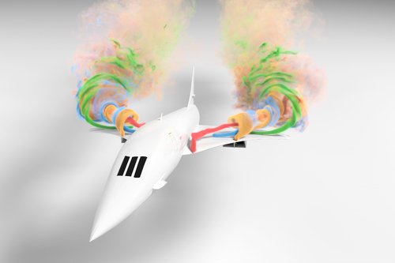
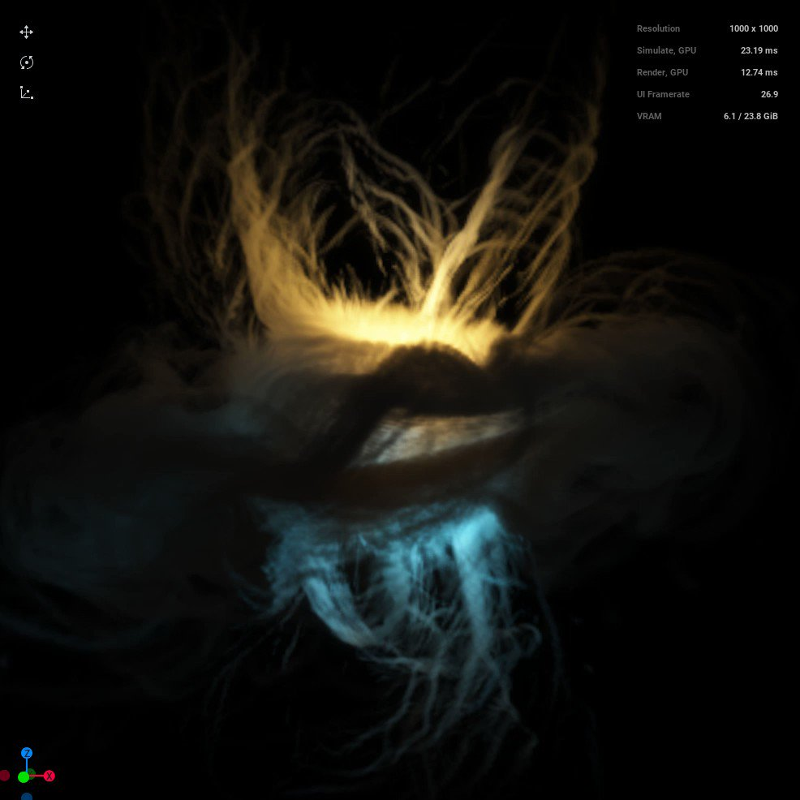
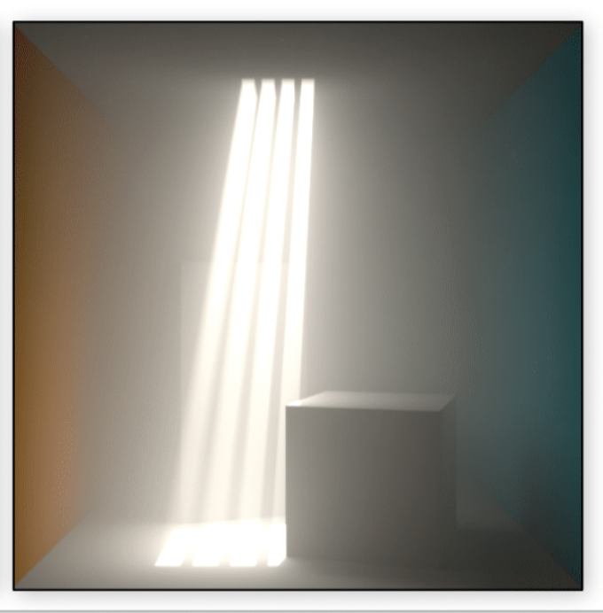

Duowen Chen (f006gcf) and Diyang Zhang (f006h07)
(#) Motivational image


We are inspired by this first image of aeroplane, and considering to combine this with some features shown in the second image. The beautiful colour displayed out from the smoke vortex line filaments generated by the plane impressed us a lot, and so we would like to render the similar phenomenon with our stylization. In addition, to highlight the colour and remark the “lines” in this case, we would like to create as well some detail-preserved shining and glistening effect within the volumetric medium. (#) Proposed features and points We implemented the following features: * Volumetric path tracing with homogenous and heterogenous media with coloring (4-8 pts) * Photon mapping with global photon map, caustic photon map and final gathering (4-8 pts) * Environment Map with importance sampling (2-4 pts) * Microfacet Anisotropic BRDF (2-4 pts) * Directional Light (1-2 pts) * Depth of field (1-2 pts) * Transformation of texture (1-2 pts) (##) Division of collaboration We implemented volumetric path tracing, transformation of texture, depth of field together. Diyang Zhang implemented microfacet anisotropic BRDF and all the modeling needed for showcase and validation tests. Duowen Chen implemented photon mapping, environmenet map and sun light. We consider this to be a equal disttribution of work. (#) Validation for results (##) VPT with homogenous and heterogenous media with coloring: We first show our implementaion of homogenous media. We use the implementation provided from slides that sample distance is generated from a power disttribution mapped from a uniform random number. Then we implemented MIS style integrator given the pesudo code from slides:  For homo media, the implementation is in `media/homogenous.cpp` and `integrator/path_tracer_volume.cpp` We show effect of this below:  For sun light, the implementation is in `material/direct_light.cpp` With directional light (sun light) implementation, we also have the following effect:  We then show our implementation for heterogenous media where we adopt the null particle scattering scheme from lecture slides. We also used a MIS style integrator for heterogenous media:  We show effect below:  Effect with color:  (##) Environment Map with importance sampling We implemented environmenet map as a diffuse lightsource with a new surface object. We use importance sampling scheme from lecture give below: